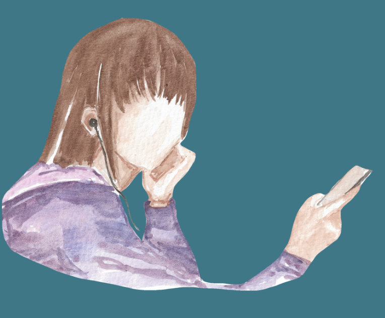
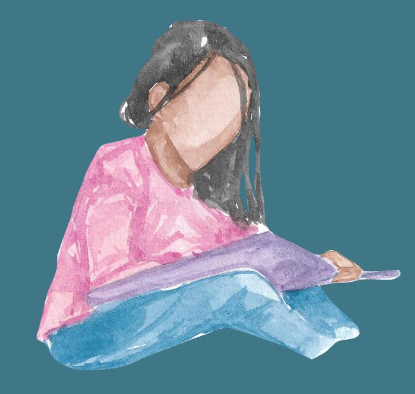

Gossip isn’t inherently a negative thing. Sometimes it’s just a way of bonding or finding out you think the same way as someone else. But sometimes gossip is used as something far darker. A weapon. Literally it can feel like someone is trying to destroy you with it.
Maybe you confronted someone in private, but now everyone else is starting to act strange or even rude towards you. You know what’s happened, and maybe you didn’t hear it so you can’t give evidence to a teacher, but you know.
You may have become victim to a smear campaign.
This is where your reputation starts to be tarnished in favour of protecting someone else, someone who hurt you. Maybe now you’re being treated like you did something terrible. Now you’re being looked at with disgust or heads are turning as you walk to school. Girls are hitting you with their handbags as they shove past you. Now perhaps people who were your friends are even trying to avoid you out of no where. But the worst bit? No one is telling you what’s going on.
This is the tough one. You might be told to just ignore it. Whilst there’s truth in not fueling even more reactions from these people, ignoring your own reputation being destroyed isn’t what anyone deserves. You don’t deserve to walk into school feeling like you are hated for no reason. It’s deeply abusive and will gradually start to decline your mental health. It’s important to find community in this time. Where you feel safe and supported. These things will die down over time, but you can still protect yourself in different ways.

Check off steps you might consider taking to protect your space:
Whatever it is, tell people what you are going through and your worries. You deserve people around you that see you and treat you for who you truly are. If you know you’ve done nothing wrong or nothing that serious you shouldn’t be exiled for it. These changes may seem extremely difficult. And they are. Unless it is extremely serious, you don’t need to spend time trying to find out what is being spread exactly. Chances are it keeps changing, is extremely untrue, and the process of finding out might make things worse. You may feel more hurt, or even more gossip may spread.
Add people, groups, or spaces where you feel safe or could potentially find support:
I’m really sorry that you are going through this. But the fact you found this website is a sign that you can get through it. Because you can surround your media consumption with uplifting confidence building activities that can make it easier to ignore the situation. Because you don’t have to ignore yourself just because you can’t physically get away. Check out our defend and healing sections to learn ways you can build up your resilience.

Find a passion project, a subject you want to excel in, a new hobby, a new goal, a university you want to get into, and go really into it.
Immersing yourself in something else will help you get through the worst of it because your mind can be so preoccupied on working on yourself that you can genuinely ignore what is going on behind your back more easily.
Plus you get to make progress on something different and build new skills!
Click on each flag below to read more details: